Bio Robots
OpenRatSLAM : an open source brain-based SLAM system
Feb 2013
Source
- RatSLAM, OpenRatSLAM, SLAM, Navigation, Mapping, Brain-based, Appearance-based, ROS, Open-source, Hippocampus
- RatSLAM is a navigation system based on the neural processes underlying navigation in the rodent brain, capable of operating with low resolution monocular image data. This paper describes OpenRatSLAM, an open source version of RatSLAM with bindings to ROS
- SLAM(Simultaneous Localization and Mapping) , at the core based on SIFT or SURF features.
- This implementation is based on RatSLAM, leveraging tools like OpenCV and ROS.
- Modular, detailed, integrated with ROS and rviz, works online and offline.
- RatSLAM
- 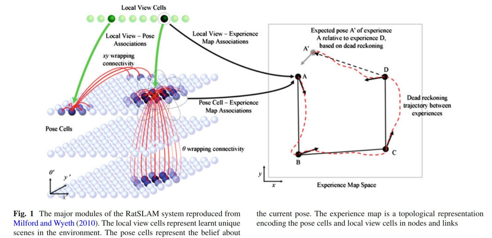
- Pose Cells, Local View Cells and Experience Map
- OpenRatSLAM, code
- 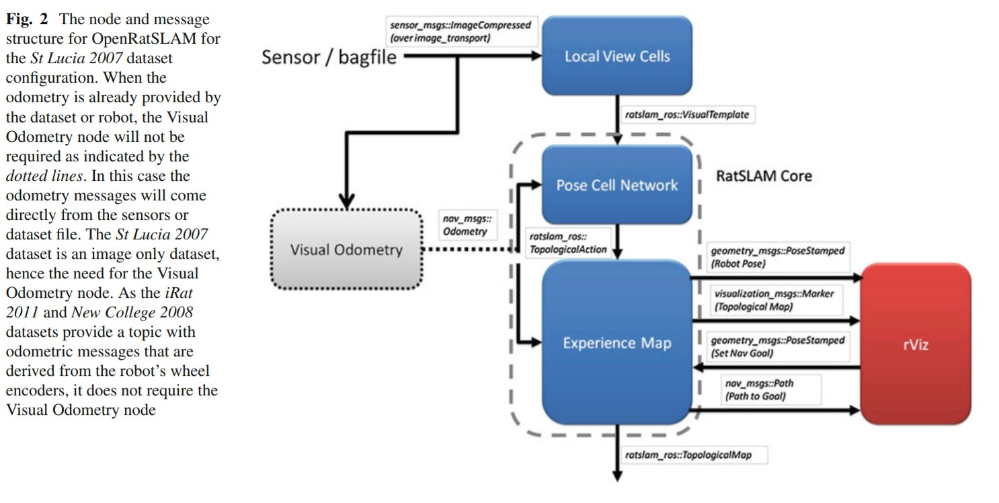
- Pose Cell Network : represents pose in response to odometric and local view connections. This also makes decisions about the experience map node and link creation.
- Local View Cells : determines whether a scene is novel or familiar by image comparison techniques. Mostly based on template matching.
- Experience map : manages graph building, graph relaxation and path planning.
- Visual Odometry : For image only datasets, provides an odometric estimate based on changes in the visual scene.
- OpenRatSLAM parameters and tuning
- 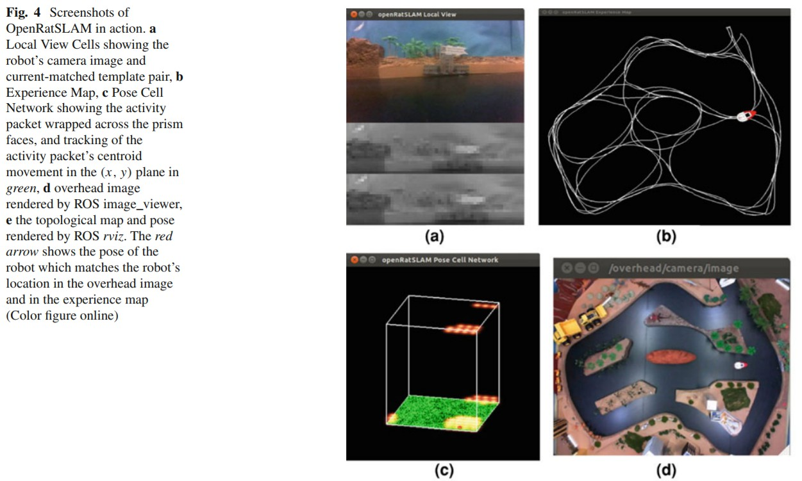 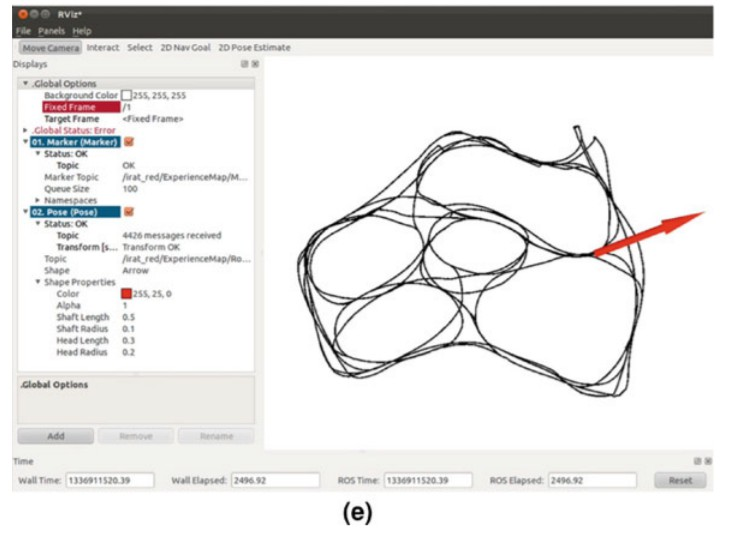
- Iterative tuning by minimizing loss.
- Using OpenRatSLAM
- Examples of datasets this is used with, and some results.
- Future work
- Watch In Action
Biologically Inspired Approaches to Robotics
March 1997
Source
- Big gap between fantasy and reality in terms of Autonomous Robots.
- Inspirations from insects : agility, adaptability, simplicity
- Focuses on walking like an insect.
- From Biology to Robotics
- Studies done at various levels of integration and inspiration.
- Distributed Gait Control
- A Distributed Neural Network Controller
- A Stick Insect Controller
- 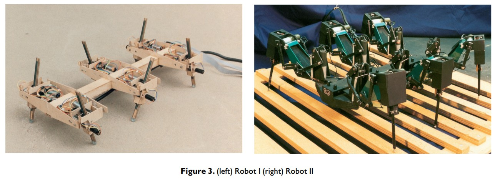
- Evolved Locomotion Controllers
- Use genetic algorithms to evolve the neural networks for controlling the locomotion.
- Rough Terrain Locomotion
The First Takeoff of a Biologically Inspired At-Scale Robotic Insect
April 2008
Source
- Actuators, aerial robotics, biologically inspired robotics, microrobotics
- Goal is to create an insect-sized, truly micro air vehicle.
- Harvard Microrobotic Fly
- 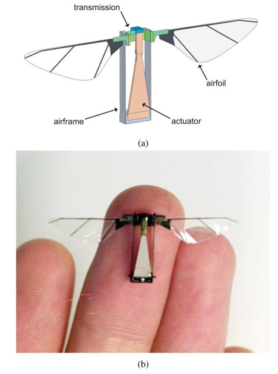
- Fig. (a) Conceptual drawing highlighting the four primary mechanical and aero-mechanical components.
- Fig. (b) First insect-scale flying robot able to takeoff.
- INSECT-FLIGHT
- Dipteran thoracic mechanics is discussed.
- Creation of a Robotic Insect
- Actuation
- Using peizoceramic materials.
- Transmission
- Airfoils
- Actuation
- Watch In Action
Towards Dynamic Trot Gait Locomotion—Design, Control, and Experiments with Cheetah-cub, a Compliant Quadruped Robot
Alexander Spröwitz , Alexandre Tuleu, Massimo Vespignani, Mostafa Ajallooeian, Emilie Badri, Auke Jan Ijspeert :July 2013
Source
- Cheetah Cub : novel compliant quadruped robot.
- Watch In Action
- Fastest of its kind with speeds upto $1.42ms^{-1}$.
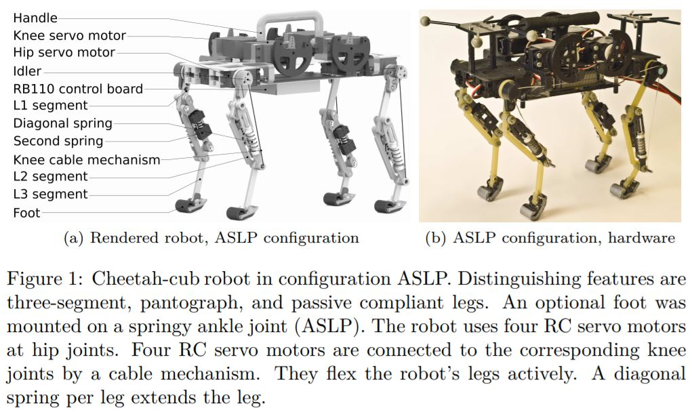 - The implementation of multi-segment, compliant legs presents a major biological solution.
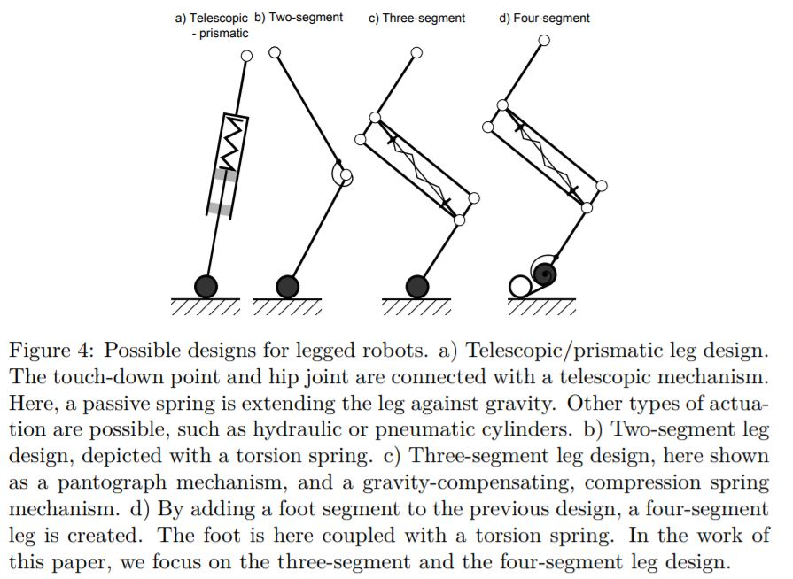
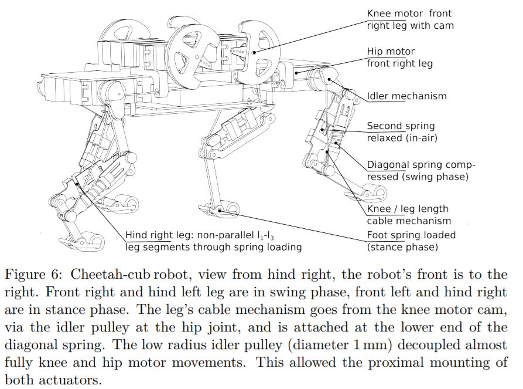 - Webots model description
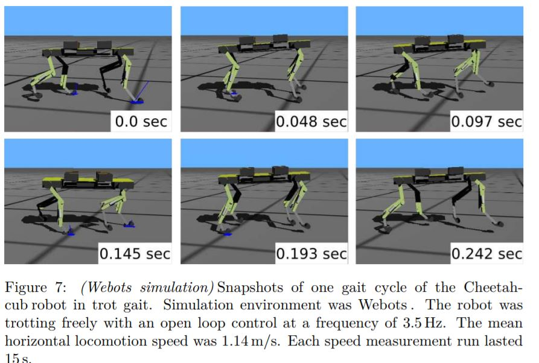 - Control
- Uses Central pattern generators(CPG)
- Results
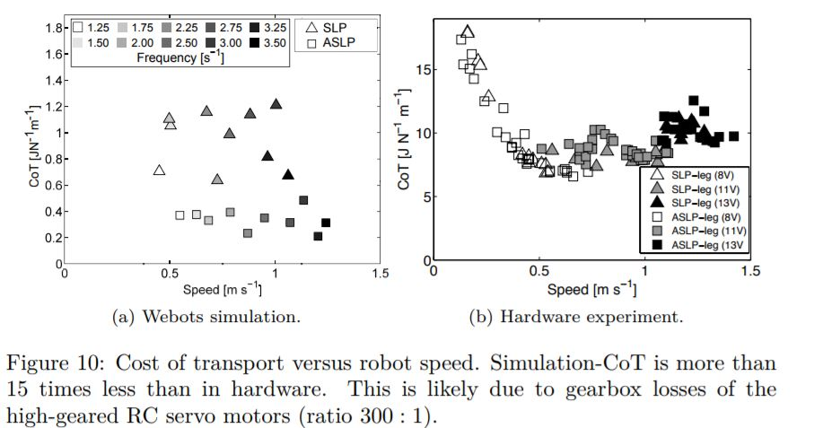
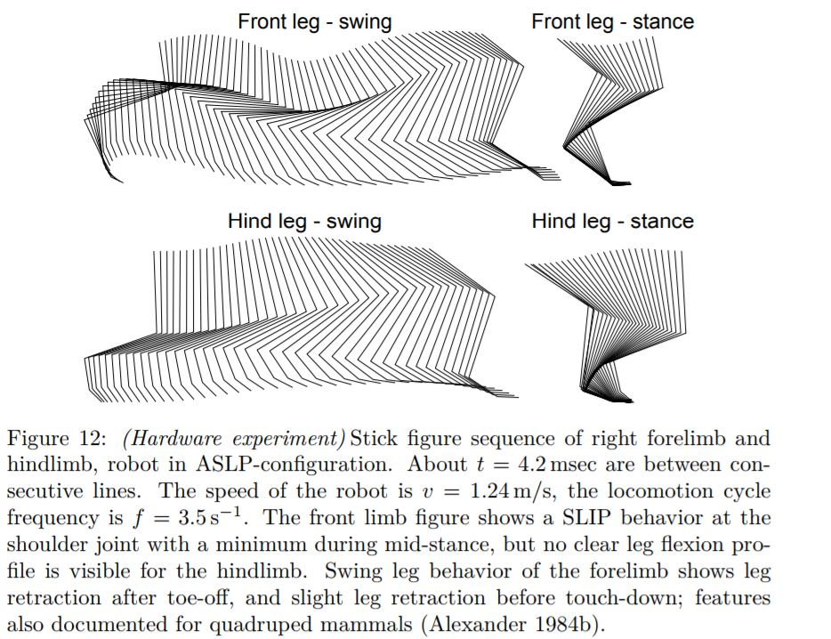
Gait Pattern Generation and Stabilization for Humanoid Robot Based on Coupled Oscillators
Inyong Ha, Yusuke Tamura, and Hajime Asama : Sep 2011
Source
- Achieve balanced walking for a DarwIn-OP by gait pattern generation and stabilization using coupled oscillators. 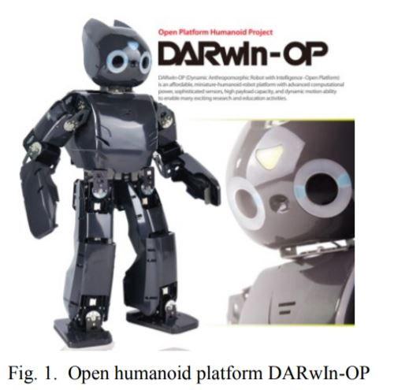